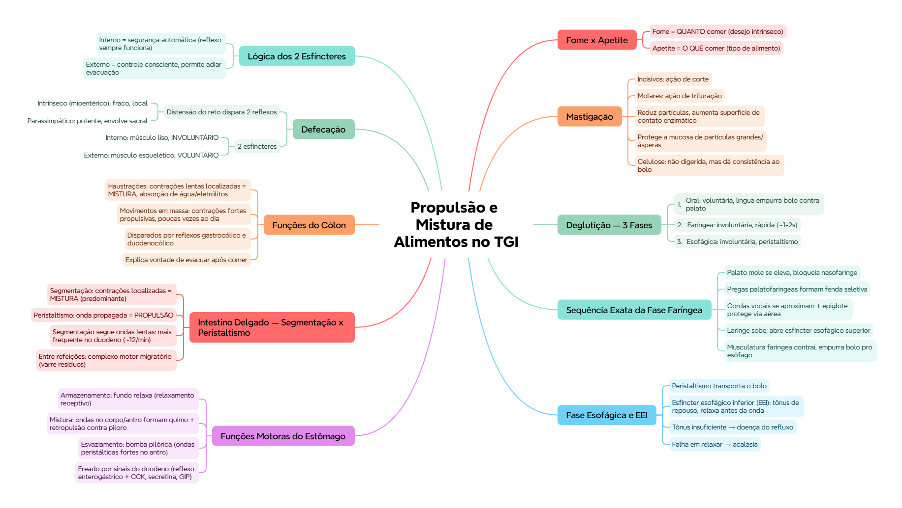

🎯 O que você vai conseguir fazer depois desse capítulo
Diferenciar fome de apetite, e explicar a importância da mastigação
Descrever as 3 fases da deglutição (oral, faríngea, esofágica)
Explicar as 3 funções motoras do estômago: armazenamento, mistura e esvaziamento
Diferenciar segmentação (mistura) de peristaltismo (propulsão) no intestino delgado
Descrever haustrações e movimentos em massa no cólon
Explicar o mecanismo neural da defecação
🍴 Ingestão de alimentos: fome x apetite
A quantidade de alimento que uma pessoa ingere depende principalmente do seu desejo intrínseco por comida — a fome. Já o tipo de alimento buscado preferencialmente em cada momento depende do apetite.
💡 Fome = QUANTO comer. Apetite = O QUÊ comer. São conceitos relacionados, mas regulados de forma distinta.
🦷 Mastigação
Envolve músculos e peças dentárias com papéis diferentes:
Dentes anteriores (incisivos): ação de corte
Dentes posteriores (molares): ação de trituração
🟢 Por que a mastigação importa: ela reduz o alimento em partículas menores, aumentando a superfície de contato com as enzimas digestivas — o que acelera a digestão. Além disso, protege a mucosa do tubo digestivo de lesões causadas por partículas grandes e ásperas. A celulose (fibra vegetal) não é digerida pelas enzimas humanas, mas ajuda a dar consistência e volume ao bolo alimentar, auxiliando a mistura e o trânsito.
🌀 Deglutição — as 3 fases
Fase
Controle
O que acontece
1. Oral
Voluntária
A língua empurra o bolo alimentar contra o palato e pra trás, iniciando o reflexo de deglutição
2. Faríngea
Involuntária (rápida, ~1-2s)
Sequência coordenada de eventos protetores (veja abaixo)
3. Esofágica
Involuntária
Peristaltismo transporta o bolo até o estômago
Sequência exata da fase faríngea (frequentemente cobrada em ordem):
O palato mole se eleva, bloqueando a nasofaringe
As pregas palatofaríngeas se deslocam pra linha média, formando uma fenda que só deixa passar alimento já bem mastigado
As cordas vocais da laringe se aproximam, e a epiglote basculamento protege a via aérea
A laringe sobe, o que também traciona e amplia a entrada do esôfago (abre o esfíncter esofágico superior)
Toda a musculatura faríngea se contrai, empurrando o bolo pro esôfago
📌 O que o professor cobra nesta seção: a sequência EXATA dos 5 eventos da fase faríngea — é clássico pedir "coloque em ordem" ou "qual NÃO faz parte dessa fase".
🛤️ Fase esofágica e o esfíncter esofágico inferior
O esôfago transporta o bolo por peristaltismo — uma onda de contração que se propaga em direção ao estômago. O esfíncter esofágico inferior (EEI) permanece normalmente contraído (tônus de repouso), evitando refluxo do conteúdo gástrico, e relaxa momentos antes da chegada da onda peristáltica, permitindo a passagem do bolo pro estômago.
🏥 Disfunções do EEI têm relevância clínica direta: tônus insuficiente favorece doença do refluxo gastroesofágico; falha em relaxar favorece quadros como a acalasia.
🫃 Funções motoras do estômago — 3 papéis
Função
Mecanismo
Armazenamento
O fundo gástrico relaxa pra acomodar o alimento sem aumentar muito a pressão (relaxamento receptivo)
Mistura
Ondas de mistura no corpo/antro gástrico misturam o alimento com as secreções, formando o quimo; parte do conteúdo sofre retropulsão contra o piloro (quase) fechado, misturando ainda mais
Esvaziamento
Controlado pela bomba pilórica — ondas peristálticas fortes no antro empurram o quimo através do piloro em pequenas quantidades por vez
💭 O esvaziamento gástrico é freado por sinais vindos do duodeno (reflexo enterogástrico + hormônios como CCK, secretina e GIP) — o duodeno "avisa" o estômago pra desacelerar se já tiver gordura, ácido ou distensão demais ali, protegendo a capacidade digestiva do intestino delgado.
🌊 Funções do intestino delgado — segmentação x peristaltismo
Movimento
Função
Segmentação
Contrações localizadas que dividem o intestino em segmentos, misturando o quimo com as secreções — é o movimento de MISTURA predominante
Peristaltismo
Onda de contração que se propaga, empurrando o conteúdo em direção ao cólon — é o movimento de PROPULSÃO
💡 A segmentação segue o padrão das ondas lentas (do Cap. 8) — mais frequente no duodeno (~12/min), diminuindo gradualmente até o íleo. Entre as refeições, um padrão elétrico e motor diferente assume: o complexo motor migratório, que "varre" o intestino de resíduos entre digestões.
🌀 Funções do cólon
Movimento
Função
Haustrações
Contrações lentas e localizadas, análogas à segmentação do delgado — misturam o conteúdo e favorecem a absorção de água e eletrólitos
Movimentos em massa
Contrações fortes e propulsivas que ocorrem só algumas vezes ao dia (tipicamente após refeições), empurrando grandes trechos do conteúdo colônico de uma vez em direção ao reto
💡 Os movimentos em massa são disparados principalmente pelos reflexos gastrocólico e duodenocólico (do Cap. 8) — é por isso que muita gente sente vontade de evacuar logo depois de comer.
🚽 Defecação
A distensão do reto dispara 2 reflexos coordenados:
Reflexo intrínseco (mioentérico) — fraco sozinho, mediado localmente pelo sistema nervoso entérico
Reflexo de defecação parassimpático — muito mais potente, envolve segmentos sacrais da medula espinal, intensificando as contrações do cólon/reto
A saída das fezes depende do relaxamento de 2 esfíncteres:
Segmentação = mistura (intestino delgado). Peristaltismo = propulsão. Haustrações = mistura (cólon). Movimentos em massa = propulsão forte, poucas vezes ao dia.
⚠️ Erro comum
Achar que o esfíncter anal externo é involuntário — é justamente o externo que permite o controle CONSCIENTE da defecação; o interno é o involuntário.
⚡ Questão rápida
Por que uma pessoa costuma sentir vontade de evacuar logo depois de uma refeição?
Porque a chegada de alimento no estômago/duodeno dispara os reflexos gastrocólico e duodenocólico, que estimulam movimentos em massa no cólon, empurrando o conteúdo em direção ao reto e disparando a vontade de defecar.
🧠 Autoexplicação
Por que faz sentido, do ponto de vista funcional, que a defecação dependa de DOIS esfíncteres com controle diferente (um involuntário, um voluntário), em vez de um só?
O esfíncter interno (involuntário) garante que o reflexo de defecação funcione automaticamente, sem exigir atenção consciente constante — é o "padrão de segurança" do sistema. Mas se a defecação fosse totalmente automática e incontrolável, a pessoa não teria como adiar a evacuação em momentos socialmente inadequados. O esfíncter externo (voluntário, músculo esquelético) resolve exatamente esse problema: dá à pessoa a capacidade consciente de INIBIR temporariamente um reflexo que, de outra forma, aconteceria de forma automática — é a camada de controle voluntário sobreposta a um mecanismo reflexo básico, permitindo que o comportamento social e a fisiologia coexistam.
⚠️ Onde todo mundo escorrega
Trocar fome (quantidade) com apetite (tipo de alimento)
Errar a ordem dos eventos da fase faríngea da deglutição
Confundir segmentação (mistura) com peristaltismo (propulsão) — os dois coexistem no intestino delgado, com funções opostas
Achar que o esfíncter anal externo é involuntário — é o interno que é involuntário; o externo é voluntário
Esquecer que o esvaziamento gástrico é freado por sinais do PRÓPRIO duodeno (reflexo enterogástrico), não só acelerado pelo estômago
Vamos acompanhar o Sr. Adalberto, 55 anos, com queixas de dificuldade pra engolir e azia frequente. O caso evolui em 3 níveis — clica em cada um pra ver como as coisas vão se desenrolando.
🧠 Mapa Mental — Propulsão e Mistura dos Alimentos no TGI
Visão geral do capítulo em formato visual — ideal pra revisão rápida antes da prova. O conteúdo completo, com explicações e exemplos, está no Guia de Estudo.

🃏 Flashcards — SM-2 real + interface Anki
O sistema guarda, no seu navegador, quais cards você já sabe bem e quais precisam voltar mais cedo — cada vez que você avalia um card, ele recalcula quando ele deve voltar.
Cartão 1 / 0Dominados: 0
PERGUNTA
RESPOSTA
✅ Banco de Questões Comentadas
10 questões, do mais básico ao mais puxado. Escolhe uma alternativa, depois clica em "Ver comentário completo" — vale a pena ler até quando você acerta, porque o comentário explica cada alternativa, não só a certa.